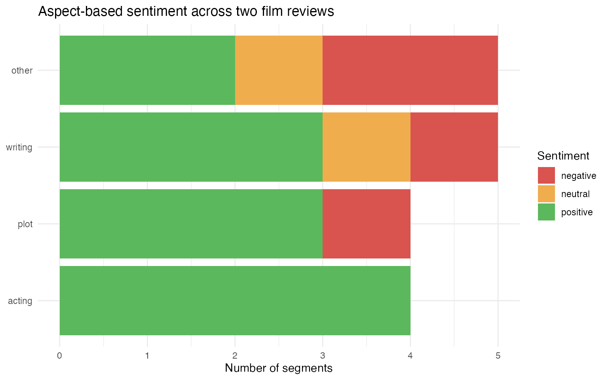
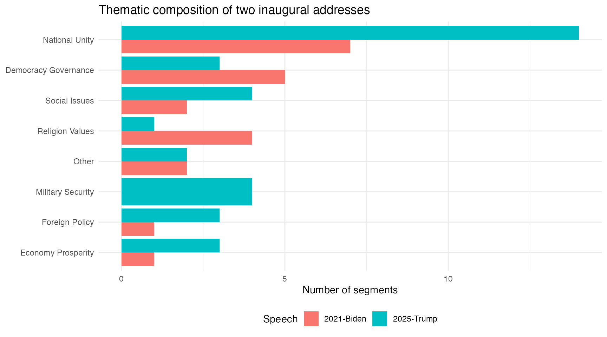

Example: Text segmentation
Aspect-based sentiment
and thematic analysis with qlm_segment()
example_segmentation.Rmdqlm_segment() splits a text into thematic or conceptual
units and returns a quanteda corpus
with one document per segment. The schema fields from the codebook
become docvars on the output corpus, making it straightforward to
combine LLM-powered segmentation with downstream quantitative
analysis.
This article illustrates two applications: aspect-based sentiment analysis of film reviews, and thematic segmentation of recent US presidential inaugural addresses.
Aspect-based sentiment in movie reviews
Aspect-based sentiment analysis (ABSA) asks not just whether a reviewer is positive or negative overall, but which specific features they discuss and what they say about each. A review that praises the acting while criticising the plot will read as moderately positive in aggregate, but the aspect-level picture is much richer.
The data
We draw two reviews from data_corpus_LMRDsample, the
200-review subset of the Large Movie Review Dataset bundled with
quallmer (Maas et al., 2011): one negative and one positive.
set.seed(55)
idx_neg <- which(docvars(data_corpus_LMRDsample)$polarity == "neg")
idx_pos <- which(docvars(data_corpus_LMRDsample)$polarity == "pos")
corp_reviews <- data_corpus_LMRDsample[c(sample(idx_neg, 1), sample(idx_pos, 1))]
corp_reviews
#> Corpus consisting of 2 documents and 3 docvars.
#> 239_2.txt :
#> "Oh, man, they sure knew how to make them back then. Hollywoo..."
#>
#> 12000_9.txt :
#> "Sorry to repeat myself over and over, but here's another gre..."The codebook
cb_absa <- qlm_codebook(
name = "Aspect-based sentiment",
instructions = paste(
"Segment the review into contiguous spans that each address a single aspect",
"of the film. A segment may be a clause, a sentence, or several sentences.",
"Label each segment with the aspect it discusses and the expressed sentiment.",
"",
"Aspects: acting, cinematography, direction, music, pacing, plot, writing, other.",
"Return the verbatim text of each segment."
),
schema = ellmer::type_object(
aspect = ellmer::type_enum(
c("acting", "cinematography", "direction", "music", "pacing",
"plot", "writing", "other"),
description = "Film aspect discussed in this segment"
),
sentiment = ellmer::type_enum(
c("negative", "neutral", "positive"),
description = "Sentiment expressed toward this aspect"
)
),
role = "You are an expert film critic and NLP researcher."
)
cb_absa
#> quallmer codebook: Aspect-based sentiment
#> Input type: text
#> Role: You are an expert film critic and NLP researcher.
#> Instructions: Segment the review into contiguous spans that each address a...
#> Output schema:ellmer::TypeObject
#> Levels:
#> aspect: nominal
#> sentiment: nominalSegmenting the reviews
segs_reviews <- qlm_segment(
corp_reviews,
codebook = cb_absa,
model = "openai/gpt-4o-mini",
name = "GPT-4o-mini"
)
saveRDS(segs_reviews, "data/segs_reviews.rds")Segments
Each review is now split into aspect-level segments. The output
corpus carries docid, segid,
aspect, and sentiment, plus the
polarity and rating docvars inherited from the
source corpus:
docvars(segs_reviews) |>
mutate(text = as.character(segs_reviews)) |>
select(docid, segid, aspect, sentiment, polarity, rating, text) |>
knitr::kable()| docid | segid | aspect | sentiment | polarity | rating | text |
|---|---|---|---|---|---|---|
| 239_2.txt | 1 | writing | positive | neg | 2 | Oh, man, they sure knew how to make them back then. |
| 239_2.txt | 2 | writing | negative | neg | 2 | Hollywood has forgotten the basic ingredients of bad movie making: cardboard steel and the god fearing scientist action hero! |
| 239_2.txt | 3 | plot | negative | neg | 2 | This film was so close to a masterpiece, alas it was not to be, as it failed to feature ray guns and invaders from the Moon. |
| 239_2.txt | 4 | writing | neutral | neg | 2 | The MST3K version tried to fix this by adding a pilot of a show called Captain Cody, where a guy with a rocket propelled jacket fights bad make-up people from the Moon, but it didn’t quite add up. |
| 239_2.txt | 5 | other | negative | neg | 2 | Also, the comments of the guys in the theater were not nearly as funny as I expected them to be. |
| 239_2.txt | 6 | other | negative | neg | 2 | All in all, a great disappointment. |
| 12000_9.txt | 1 | other | positive | pos | 9 | Sorry to repeat myself over and over, but here’s another great Columbo episode. I guess that’s why I’m such a fan - most episodes really are great! |
| 12000_9.txt | 2 | plot | positive | pos | 9 | The best episodes always have a standout feature of some sort, and in this case the murderer and his accomplice are possibly the youngest ever Columbo villains. |
| 12000_9.txt | 3 | writing | positive | pos | 9 | After watching a lot of episodes where Columbo and his adversary act like close friends, it’s good to see an episode where tempers fray and bad feelings rise to the surface. |
| 12000_9.txt | 4 | writing | positive | pos | 9 | It just gives an episode a bit more drama and bite. |
| 12000_9.txt | 5 | plot | positive | pos | 9 | Columbo is rapidly onto the fact that the two students who claim to be helping him are not very secretly laughing at him and feeding him false clues. |
| 12000_9.txt | 6 | acting | positive | pos | 9 | He happily plays along, deliberately turning up the bumbling in front of them to make them underestimate him! But of course he knows instantly when they are talking baloney. |
| 12000_9.txt | 7 | plot | positive | pos | 9 | The murder itself is another complicated one, along the lines of The Bye Bye Sky High IQ episode, with a sophisticated chain reaction of events that manages to kill the intended target while providing the assassins with a seemingly watertight alibi. |
| 12000_9.txt | 8 | other | neutral | pos | 9 | In the intervening years between 1978 and 1990, the technology has moved on from record players and firecrackers to remote control car locking systems and hidden cameras. |
| 12000_9.txt | 9 | acting | positive | pos | 9 | Stephen Caffrey puts in a great performance as Justin Rowe, the obnoxious, spoilt student. |
| 12000_9.txt | 10 | acting | positive | pos | 9 | Gary Hershberger is low-key but good as his “yes-man” friend Cooper Redman. |
| 12000_9.txt | 11 | acting | positive | pos | 9 | And it’s nice to see Robert Culp as Mr Rowe, Justin’s dad. |
| 12000_9.txt | 12 | other | positive | pos | 9 | A very satisfying episode in all ways. |
Sentiment by aspect
Pooling across both reviews, we can see which aspects attract positive versus negative commentary:
docvars(segs_reviews) |>
count(aspect, sentiment) |>
mutate(
sentiment = factor(sentiment, levels = c("negative", "neutral", "positive")),
aspect = reorder(aspect, n, sum)
) |>
ggplot(aes(x = aspect, y = n, fill = sentiment)) +
geom_col() +
scale_fill_manual(
values = c(negative = "#d9534f", neutral = "#f0ad4e", positive = "#5cb85c")
) +
labs(
x = NULL,
y = "Number of segments",
title = "Aspect-based sentiment across two film reviews",
fill = "Sentiment"
) +
coord_flip() +
theme_minimal()
Thematic segmentation of inaugural addresses
Presidential inaugural addresses typically move through several
distinct themes — calls for unity, foreign policy commitments, economic
priorities, statements of national values — often without explicit
markers separating them. qlm_segment() can recover this
thematic structure automatically.
The data
We use the two most recent speeches in
quanteda::data_corpus_inaugural:
corp_inaugural <- tail(data_corpus_inaugural, 2)
corp_inaugural
#> Corpus consisting of 2 documents and 4 docvars.
#> 2021-Biden :
#> "Chief Justice Roberts, Vice President Harris, Speaker Pelosi..."
#>
#> 2025-Trump :
#> "Thank you. Thank you very much, everybody. Wow. Thank you..."The codebook
cb_inaugural <- qlm_codebook(
name = "Thematic segmentation of inaugural addresses",
instructions = paste(
"Segment this inaugural address into contiguous thematic passages.",
"Begin a new segment when the speaker shifts to a clearly different theme.",
"Each segment must contain at least one complete sentence.",
"",
"Themes:",
" democracy_governance -- democratic institutions, rule of law, elections",
" economy_prosperity -- jobs, industry, trade, economic growth",
" foreign_policy -- international relations, alliances, diplomacy",
" military_security -- armed forces, national security, veterans",
" national_unity -- calls for solidarity, healing, shared identity",
" religion_values -- religious references, moral and cultural values",
" social_issues -- healthcare, education, civil rights, environment",
" other -- passages that do not fit the above themes"
),
schema = ellmer::type_object(
theme = ellmer::type_enum(
c("democracy_governance", "economy_prosperity", "foreign_policy",
"military_security", "national_unity", "religion_values",
"social_issues", "other"),
description = "Thematic label for this passage"
)
),
role = "You are an expert in American political rhetoric and speech analysis."
)
cb_inaugural
#> quallmer codebook: Thematic segmentation of inaugural addresses
#> Input type: text
#> Role: You are an expert in American political rhetoric and speech ...
#> Instructions: Segment this inaugural address into contiguous thematic pass...
#> Output schema:ellmer::TypeObject
#> Levels:
#> theme: nominalSegmenting the speeches
segs_inaugural <- qlm_segment(
corp_inaugural,
codebook = cb_inaugural,
model = "openai/gpt-4.1-mini"
)
saveRDS(segs_inaugural, "data/segs_inaugural.rds")Summary of themes
docvars(segs_inaugural) |>
count(docid, theme) |>
tidyr::pivot_wider(names_from = docid, values_from = n, values_fill = 0L) |>
knitr::kable(caption = "Number of segments by theme and speech")| theme | 2021-Biden | 2025-Trump |
|---|---|---|
| democracy_governance | 5 | 3 |
| economy_prosperity | 1 | 3 |
| foreign_policy | 1 | 3 |
| national_unity | 7 | 14 |
| religion_values | 4 | 1 |
| social_issues | 2 | 4 |
| other | 2 | 2 |
| military_security | 0 | 4 |
Theme distribution by speech
docvars(segs_inaugural) |>
count(docid, theme) |>
mutate(theme = tools::toTitleCase(gsub("_", " ", theme))) |>
ggplot(aes(x = reorder(theme, n, sum), y = n, fill = docid)) +
geom_col(position = "dodge") +
labs(
x = NULL,
y = "Number of segments",
fill = "Speech",
title = "Thematic composition of two inaugural addresses"
) +
coord_flip() +
theme_minimal() +
theme(legend.position = "bottom")
Reliability of aspect-based segmentation
How reproducible is the ABSA segmentation? We re-segment the same two
reviews with a second model and compare the two runs using
qlm_compare(), which computes Krippendorff’s
_u_α for unitizing (Krippendorff, 2019, section 12.6).
A second segmentation
segs_reviews_2 <- qlm_segment(
corp_reviews,
codebook = cb_absa,
model = "anthropic/claude-sonnet-4-5",
name = "Claude Sonnet 4.5"
)
saveRDS(segs_reviews_2, "data/segs_reviews_2.rds")Boundary agreement
|_u_α_binary tests whether the two models place segment
boundaries in the same locations, ignoring the aspect and sentiment
labels:
alphas <- qlm_compare(segs_reviews, segs_reviews_2)
print(alphas)
#>
#> ── Inter-rater reliability ──
#>
#> Subjects: 2
#> Raters: 2
#>
#> ── (boundaries) (unitizing)
#> Krippendorff's alpha (unitizing, binary) [239_2.txt] 1.0000
#> Krippendorff's alpha (unitizing, binary) [12000_9.txt] 0.9364
#> Krippendorff's alpha (unitizing, binary) [(overall)] 0.9576
#>
as.data.frame(alphas)
#> variable level measure value docid rater1
#> 1 (boundaries) unitizing alpha_u_binary 1.0000000 239_2.txt GPT-4o-mini
#> 2 (boundaries) unitizing alpha_u_binary 0.9363609 12000_9.txt GPT-4o-mini
#> 3 (boundaries) unitizing alpha_u_binary 0.9576468 (overall) GPT-4o-mini
#> rater2
#> 1 Claude Sonnet 4.5
#> 2 Claude Sonnet 4.5
#> 3 Claude Sonnet 4.5Boundary and sentiment agreement
When we pass by = "sentiment", _u_α_nominal
tests both boundary placement and whether the models agree on the
sentiment label assigned to each span:
alphas_by <- qlm_compare(segs_reviews, segs_reviews_2, by = "sentiment")
print(alphas_by)
#>
#> ── Inter-rater reliability ──
#>
#> Subjects: 2
#> Raters: 2
#>
#> ── sentiment (unitizing)
#> Krippendorff's alpha (unitizing) [239_2.txt] 0.3123
#> Krippendorff's alpha (unitizing) [12000_9.txt] 0.9943
#> Krippendorff's alpha (unitizing) [(overall)] 0.8310
#> Krippendorff's alpha (coding | unitizing) [(overall)] 0.8276
#> alpha (unitizing, value=positive) [(overall, coverage=100%)] 1.0000
#> alpha (unitizing, value=negative) [(overall, coverage=100%)] 0.7444
#> alpha (unitizing, value=neutral) [(overall, coverage=100%)] 0.5999
#>
as.data.frame(alphas_by)
#> variable level measure value
#> 1 sentiment unitizing alpha_u_nominal 0.3122950
#> 2 sentiment unitizing alpha_u_nominal 0.9942546
#> 3 sentiment unitizing alpha_u_nominal 0.8310061
#> 4 sentiment unitizing alpha_cu_nominal 0.8276303
#> 5 sentiment unitizing alpha_u_per_value[positive] 1.0000000
#> 6 sentiment unitizing alpha_u_per_value[negative] 0.7444180
#> 7 sentiment unitizing alpha_u_per_value[neutral] 0.5998600
#> docid rater1 rater2
#> 1 239_2.txt GPT-4o-mini Claude Sonnet 4.5
#> 2 12000_9.txt GPT-4o-mini Claude Sonnet 4.5
#> 3 (overall) GPT-4o-mini Claude Sonnet 4.5
#> 4 (overall) GPT-4o-mini Claude Sonnet 4.5
#> 5 (overall, coverage=100%) GPT-4o-mini Claude Sonnet 4.5
#> 6 (overall, coverage=100%) GPT-4o-mini Claude Sonnet 4.5
#> 7 (overall, coverage=100%) GPT-4o-mini Claude Sonnet 4.5The per-review breakdown shows which texts are more or less consistently segmented, while the overall row is the value to report.
Conclusion
qlm_segment() turns unstructured text into a quanteda
corpus where each document is a semantically coherent unit. The output
integrates directly with quanteda’s ecosystem — frequency tables,
readability measures, or further LLM coding of individual segments with
qlm_code(). The ABSA example shows how mixed sentiment can
be obscured in aggregate scores; the inaugural address example shows how
thematic structure can be recovered automatically from long-form
political text. Segmented corpora can be compared across models or runs
with qlm_compare(), which computes Krippendorff’s
_u_α for unitizing — measuring both boundary and coding
agreement at the character level.